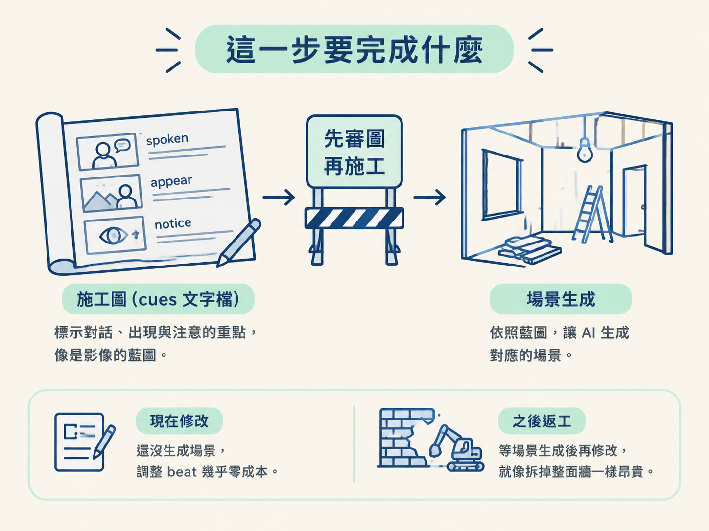
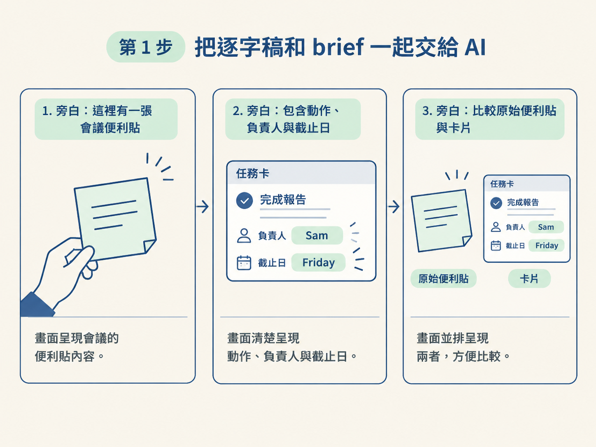
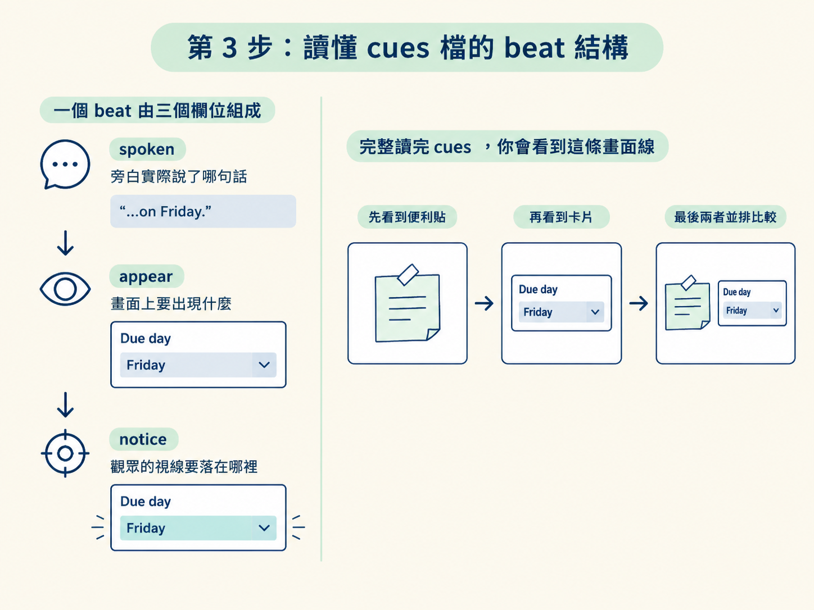

這一步位在「確認逐字稿與時間碼」之後、「生成場景」之前。你已經有一份確認過的逐字稿，也知道每句話落在第幾秒；現在要把這些話整理成一份可檢查的分鏡計畫。
最後你會得到一個文字檔，通常叫做 cues。它由一串 beat 組成，每個 beat 都會說清楚三件事：
這份檔案還不是影片，也還沒有生成場景。它比較像施工圖：先把方向畫對，再交給 AI 蓋場景，之後修改才不會像拆掉整面牆一樣昂貴。

請先準備上一節產出的確認過的逐字稿，以及你的 brief。brief 是一份簡短說明，裡面交代這支影片要解釋給誰聽，以及希望觀眾理解什麼。
這一步的分工很簡單：
請 AI 根據這兩份素材製作分鏡。指令的重點不是「這裡放點什麼」，而是要求它給每個 spoken phrase 一個明確的畫面工作。
換句話說，AI 不只要寫「顯示便利貼」，還要說明這張便利貼在這一句旁白中負責什麼。例如，當旁白介紹一張會議便利貼時，畫面的工作就是把便利貼秀出來，讓觀眾知道資訊來源。
以便利貼範例來看，可以要求 AI 依照這樣的順序安排：
如果範例中的旁白提到 Sam 在 Friday 前完成某件事，畫面就應該清楚呈現對應的負責人與截止日欄位；不要只做一個看起來熱鬧、卻沒有回答旁白的動畫。

請把順序說清楚：先寫好 cues 計畫，再建場景。
也就是說，分鏡要先成為一份獨立、可以閱讀和審查的文字產出。不要讓 AI 一邊想分鏡、一邊直接生成場景。若你先看到文字計畫，就能在成本最低的時候搬動 beat、刪掉多餘段落，或修正畫面與旁白對不上的地方。
你要檢查的是：每一個 spoken phrase 是否都有畫面工作，而不是只看整份分鏡讀起來是否漂亮。
在準備版工作區裡，cues 是一個文字檔。檔案由許多小段組成，每一小段就是一個 beat。你可以把 beat 想成影片中的一個小施工步驟：先指定旁白，再指定畫面，最後指定觀眾的視線要落在哪裡。
## due "the due day is"
- spoken: "…on Friday."
- appear: Reveal the "Due day" field reading "Friday".
- notice: Highlight that field; do not invent a calendar date.這個 beat 的讀法如下：
due 表示這一段處理的是截止日。因此，cues 不只是「某秒出現某物」的清單。它把「說了什麼」接到「畫面做什麼」，再接到「觀眾看哪裡」。讀完整份檔案時，你應該能依序想像出一條清楚的畫面線：先看到便利貼，再看到卡片，最後看到兩者並排比較。

AI 產出 cues 後，先不要急著生成任何畫面。從頭到尾讀一遍，逐個 beat 檢查：
文字檔的好處就在這裡：你可以先搬動一個 beat，或刪掉一個沒在幫忙的段落。這些修改幾乎沒有成本；等場景全部生成後才返工，代價就高得多。
完成後，你會有一份 cues 分鏡文字檔。它由一串 beat 組成，每個 beat 都把某段 spoken words 接到一個明確的畫面工作。
請再做最後一次驗證：讀完整份 cues，看看是否能順著文字想像觀眾會依序看到什麼。若旁白先介紹便利貼，畫面就應先交代便利貼；若旁白接著說到負責人和 Friday，畫面就應帶進對應的卡片與欄位；若旁白要比較來源與卡片，兩者就應同時出現。
這樣就代表分鏡已經準備好交給下一階段的場景生成。至於場景如何依照 cues 建立，留到後續步驟處理；這一節先把最重要的文字施工圖校正好。
先把確認過的逐字稿和 brief 交給 AI，請它為每個 spoken phrase 指定一個畫面工作，並先產出 cues 計畫，再生成場景。cues 由一串 beat 組成，每個 beat 都回答「說了什麼 → 畫面出現什麼 → 觀眾該注意什麼」。生成畫面前，先讀完並修正這份文字檔，因為此時搬動或刪除內容仍然很便宜。
下一節要檢查這份計畫是否合格：一邊聽旁白，一邊逐句閱讀 cues，確認畫面真的回答了正在聽到的那句話，再決定哪些 beat 保留、哪些需要修改。